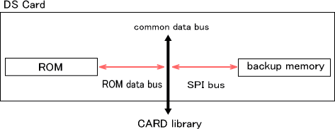

The CARD library is the lowest level interface library to manage the Nintendo DS Game Card (below: DS Card), and provides exclusive control of the DS card itself and mechanisms for ROM access, backup memory access, and card removal detection. Higher level libraries that use the DS Card, such as the file system library (FS), use the CARD Library internally.
You must call the CARD_Init function before using any CARD library functions. However, this function is called internally if the OS_Init function has been called, so there is no special need to call it on the application side.
DS card structure
This is a description of the internal hardware structure of a DS card.

The DS card has an internal read-only ROM device and may have one type of backup memory device according to what is specified. Neither device is mapped to memory space, so their data cannot be accessed directly by the CPU and must be accessed by generating transfer commands in fixed size units through a data bus.
ROM and backup both use a shared data bus. The data bus can only be used by one device at a time and is exclusively owned while the device is processing commands. If an owned data bus is released or there are ownership conflicts, device operation becomes inconsistent. However, because this is exclusively controlled at the software level by the CARD library, a card access conflict will not be a problem between processes or modules.
01/06/2006 Initial version.
CONFIDENTIAL